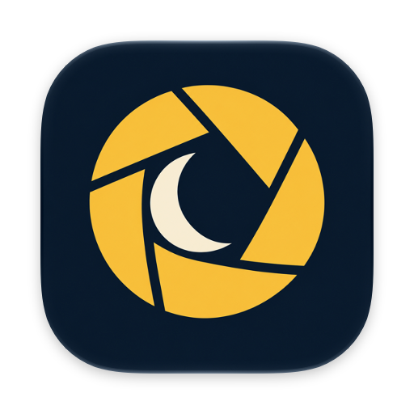

Let there be night.
NiteLite lives in your Mac's menu bar. Click it and the whole screen cuts to black like the end of a reel, then comes back up in the other mode.
Download NiteLite for MacFree. Version 1.0, 1.8 MB. Needs macOS 13 or later, Apple silicon or Intel.
See it on this page: , or press D.

Pick how the screen cuts to black
Five transitions ship with the app. Play each one on this page; the one you pick becomes what the menu bar button above does. In NiteLite, right-click the menu bar icon to choose.
-
Classic film iris
The silent-film ending. A circle closes on the middle of the screen, then opens on the other mode.
-
Left-right wipe
A soft-edged band of black sweeps in from the left and carries on out the right.
-
Old TV turn-off
The picture squeezes to a line, shrinks to a glowing dot, and blinks out.
-
Venetian blinds
Fourteen slats slide shut from alternating sides, top to bottom.
-
Curtain call
Two heavy curtains swing shut with a little sway, then part on the other mode.
Install it in a minute
- Download NiteLite and open the zip.
- Drag NiteLite into your Applications folder, then open it.
- NiteLite isn't notarized by Apple, so macOS blocks it the first time. Open System Settings, go to Privacy & Security, scroll down, and click Open Anyway.
- When asked, let NiteLite control System Events. That's the permission it uses to flip the Dark Mode setting.
Press ⌘ ⇧ D anywhere to switch. To have it start with your Mac, add it under System Settings, General, Login Items.